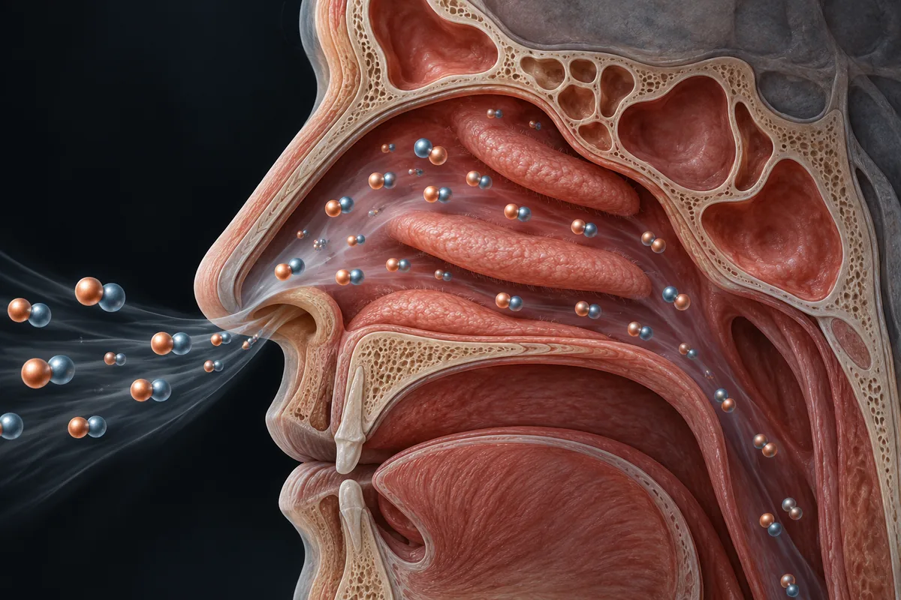

Respiração nasal no sono (óxido nítrico, testosterona e fita na boca)
O nariz entrega 4 a 6 vezes mais óxido nítrico que a boca, não 25, e a boca não chega a zero. Esse gás age no pulmão; nenhum estudo o liga à testosterona.

Material experimental. Lea antes de usar cualquier cosa de aquí.
Nada en esta página es recomendación médica, prescripción ni plan de tratamiento. Es una traducción organizada de protocolos que circulan en comunidades de investigación y, cuando existe, de lo que ensayos publicados probaron. Las dos cosas están marcadas de forma diferente — y no son equivalentes.
La mayor parte de los compuestos de aquí no tiene aprobación de la FDA para uso humano. Varios se venden con etiqueta de "uso exclusivo en investigación", lo que significa que no pasaron por control de pureza, esterilidad ni dosificación para consumo por personas. Dosis descrita por la comunidad no es dosis validada: es lo que alguien relató haber hecho.
Hable con un profesional de salud habilitado antes de considerar cualquiera de estos compuestos. Si ya usa alguno y siente algo fuera de lo previsto, busque atención — no espere al próximo examen de rutina.
Resumen
O óxido nítrico do nariz vem sobretudo dos seios paranasais. Medido, o ar que sai pelo nariz tem cerca de 56 partes por bilhão, contra 14 pela boca: 4 vezes, não 25, e a boca não chega a zero. Inalado pelo nariz, esse gás melhora um pouco a oxigenação e baixa a resistência dos vasos do pulmão; mesmo em dose centenas de vezes maior, o óxido nítrico inalado não dilatou vasos fora do pulmão. A ereção depende do óxido nítrico feito nos nervos e vasos do próprio pênis. Respirar pela boca no sono, por outro lado, tem efeito medido: em 12 adultos saudáveis forçados a respirar pela boca, o índice de apneias foi de 1,5 para 43 por hora. Nenhum estudo localizado mediu testosterona conforme a via da respiração. A fita na boca tem 10 estudos com 213 pacientes, resultados mistos e risco descrito com nariz entupido.
Por qué existe esta página
A respiração pela boca durante o sono aparece descrita em vídeos curtos sobre saúde masculina que vi publicados na internet, como algo que "destrói a testosterona" 8 horas por noite. O roteiro é este: pelo nariz, as cavidades nasais produzem óxido nítrico, o gás que dilata os vasos, regula a pressão e "ativa a recuperação hormonal"; pela boca, essa produção "cai a zero"; um livro de divulgação sobre respiração, "com dados" de uma fonte que o vídeo chama de "Stemmlands", mostraria que o nariz produz 25 vezes mais óxido nítrico; sem ele, os vasos contraem, o sangue oxigena menos e "o pico de testosterona do sono não acontece", e por isso a pessoa acorda cansada; e, como o óxido nítrico é o mediador da ereção, a ereção cairia junto. A legenda acrescenta que esse gás regula a formação de fibras musculares. O "protocolo para reverter sem aparelho" fica no perfil.
Esta página separa as três coisas que o vídeo junta: o óxido nítrico do nariz, o que a respiração pela boca faz com o sono e o que se sabe sobre testosterona e ereção. No fim, trata da fita na boca. O vídeo não fala em fita na boca; ela entra aqui porque é a prática que uma revisão de 2025 descreve como tendência das redes sociais para "forçar" a respiração nasal, e porque tem risco.
Levantei as alegações de 1 vídeo curto e da legenda dele, separei as 12 verificáveis e procurei cada estudo e cada número. Nenhum número desta página veio da fonte secundária do site.
De onde vem o óxido nítrico do nariz, e para onde ele vai
Ele vem dos seios paranasais. Em 1995, Lundberg e colegas, na Suécia, mostraram que o óxido nítrico do ar do nariz é produzido pelo epitélio dos seios paranasais, em concentração muito alta, e que a cavidade nasal propriamente dita tem atividade fraca da enzima (Lundberg 1995). Os autores ligaram esse gás à defesa contra bactérias nos seios.
A diferença entre nariz e boca é de 4 a 6 vezes, e a boca não zera. Num estudo com pacientes traqueostomizados e voluntários saudáveis, o ar expirado tinha, em média, 56 partes por bilhão de óxido nítrico pelo nariz, 14 pela boca e 6 pela traqueia; no ar inspirado, 64 pelo nariz, 11 pela boca e 4 pela traqueia (Törnberg 2002). Cantarolar de boca fechada aumentou o óxido nítrico do nariz em 15 vezes em 10 voluntários, por ventilar melhor os seios (Weitzberg 2002).
O que esse gás faz, medido, é no pulmão. Em 6 de 8 voluntários saudáveis, a tensão de oxigênio medida na pele foi 10% maior nos períodos de respiração nasal do que nos de respiração bucal (Lundberg 1996). Em 10 pacientes no dia seguinte a uma cirurgia do coração, inspirar pelo nariz baixou a resistência dos vasos do pulmão (256 contra 287 unidades), sem mudar o oxigênio do sangue arterial (Settergren 1998). É um efeito real, pequeno e localizado.
Inalado, o óxido nítrico não chega aos vasos do resto do corpo. Em 9 adultos saudáveis, respirar óxido nítrico a 40 partes por milhão, centenas de vezes a concentração do nariz, dilatou os vasos do pulmão contraídos pela falta de oxigênio e não mudou a pressão nem a resistência dos vasos do resto do corpo (Frostell 1993). A ereção, por sua vez, depende do óxido nítrico produzido pelos nervos que chegam aos corpos cavernosos e pelas artérias do próprio pênis, como mostrou o estudo em ratos de Burnett e colegas (1992). O óxido nítrico do nariz não é o que enche o pênis.
O que respirar pela boca faz com o sono, medido
Aqui o vídeo chega perto de algo verdadeiro, por outro caminho.
- Homens respiram mais pela boca dormindo, e quem respira mais pela boca tem mais apneias. Com uma máscara que separava o ar do nariz e o da boca, 7 homens saudáveis passaram 29,0% da ventilação do sono pela boca, contra 5,0% em 7 mulheres; os 4 homens com mais de 3 apneias por hora respiravam 37,3% pela boca, contra 8,1% dos demais, e a proporção crescia com a idade nos homens (Gleeson 1986).
- Forçar a boca derruba a via aérea. Em 12 adultos saudáveis, a resistência da via aérea no sono foi bem maior respirando pela boca, e o índice de apneias e hipopneias foi de 1,5 por hora pelo nariz para 43 por hora pela boca (Fitzpatrick 2003).
- Entupir o nariz piora a apneia. Uma meta-análise de 2026 achou que a obstrução nasal, provocada em experimento ou depois de cirurgia, se associou a mais 13,78 eventos por hora no índice de apneia e mais 7,45 no índice de dessaturação (Alshehri 2026).
- Melhorar o nariz pode melhorar o sono. Em 42 homens que roncavam, 1 mês dormindo com um dilatador de narina reduziu o ronco e o cansaço da manhã em 15 dos 37 que terminaram; nesses 15, o IGF-1 subiu, e a testosterona estava dentro do normal antes e depois (Löth 1998). O estudo não teve grupo controle.
O que esses estudos sustentam é que a respiração pela boca no sono, sobretudo quando o nariz está obstruído, anda junto com mais apneia e ronco. O que eles não sustentam é a ponte do vídeo: nenhum mediu o óxido nítrico como causa, e nenhum mostrou queda de testosterona pela via da respiração. A relação entre apneia e testosterona é tratada na página apneia-do-sono.
Cuánta evidencia existe, de verdad
Os números abaixo foram levantados por mim em 16 de outubro de 2026, no PubMed e no ClinicalTrials.gov. A consulta de cada linha está ao lado do número, para qualquer pessoa repetir e me contradizer.
| Base | Consulta | Resultado |
|---|---|---|
| PubMed | (nasal breathing OR mouth breathing OR oral breathing) AND sleep | 6.293 artigos |
| PubMed | (nasal breathing OR mouth breathing OR oral breathing) AND nitric oxide | 850 artigos |
| PubMed | (nasal nitric oxide OR nasal breathing OR mouth breathing OR nasal obstruction) AND testosterone | 20 artigos |
| PubMed | (nasal nitric oxide OR nasal breathing OR mouth breathing OR nasal obstruction) AND (erectile dysfunction OR erection) | 30 artigos |
| PubMed | "mouth taping"[tiab] OR "mouth tape"[tiab] OR "lip taping"[tiab] OR "mouth taped"[tiab] | 53 artigos |
| ClinicalTrials.gov | termo livre: "mouth taping" OR "mouth tape" | 5 estudos registrados |
| ClinicalTrials.gov | termo livre: "nasal breathing" AND sleep | 34 estudos registrados |
| ClinicalTrials.gov | termo livre: ("nasal breathing" OR "mouth breathing") AND (testosterone OR "erectile dysfunction") | 0 estudos registrados |
Lectura honesta de esos números
- Via da respiração e testosterona: nenhum estudo de causa. Nenhum dos 20 artigos compara testosterona entre quem respira pelo nariz e quem respira pela boca: há estudos de apneia e CPAP, de testosterona e estabilidade da respiração no sono, de pólipos nasais, de saliva no esporte, estudos em animais e o do dilatador de narina em roncadores.
- Via da respiração e ereção: um estudo, sem controle. Dos 30 artigos, a maior parte trata de remédios para ereção que entopem o nariz como efeito colateral. Um único estudo operou o nariz de 57 homens com obstrução nasal e disfunção erétil e viu os escores de função sexual subirem depois da cirurgia (Cayir 2019); não houve grupo controle.
- "Lip taping" pega outra coisa. Boa parte dos 53 artigos da busca de fita é sobre fita no lábio de bebês com fissura labial, antes da cirurgia. Os estudos de fita na boca no sono de adultos são poucos e estão na seção própria abaixo.
- Zero ensaios registrados sobre via da respiração e testosterona ou ereção.
- Registro não é resultado. Contagem de artigo mede atenção acadêmica, não evidência de desfecho.
Os estudos em humanos sobre óxido nítrico nasal, via da respiração e sono
Segundo o PubMed, estes são os trabalhos concretos por trás do que se diz sobre respirar pelo nariz. Leia o que cada um mediu, e em quantas pessoas.
| Estudio | N | Contexto | Qué reportó | Salvedad |
|---|---|---|---|---|
| Lundberg et al., 1995 Nat Med 1(4):370-3 · PMID 7585069 | não informado no resumo | Tecido e ar dos seios paranasais | Óxido nítrico produzido no epitélio dos seios, em concentração muito alta; atividade fraca na cavidade nasal | Estudo de origem, não de efeito |
| Törnberg et al., 2002 Eur Respir J 19(5):859-64 · PMID 12030725 | 10 traqueostomizados e 7 saudáveis | Óxido nítrico medido no nariz, na boca e na traqueia | Expirado: 56, 14 e 6 partes por bilhão; inspirado: 64, 11 e 4 | Valores médios; amostra pequena |
| Weitzberg e Lundberg, 2002 Am J Respir Crit Care Med 166(2):144-5 · PMID 12119224 | 10 | Cantarolar contra expirar em silêncio | Óxido nítrico nasal 15 vezes maior ao cantarolar | Mede o gás, não efeito clínico |
| Lundberg et al., 1996 Acta Physiol Scand 158(4):343-7 · PMID 8971255 | 8 saudáveis e pacientes intubados | Respiração nasal contra bucal; ar do nariz devolvido ao ventilador | Oxigênio na pele 10% maior com respiração nasal em 6 de 8; nos intubados, oxigênio arterial +18% com ar do próprio nariz | Medida transcutânea; pacientes de UTI |
| Settergren et al., 1998 Acta Physiol Scand 163(3):235-9 · PMID 9715735 | 10 | Pós-operatório de cirurgia cardíaca; inspiração nasal contra bucal, randomizado, cruzado | Resistência dos vasos do pulmão 256 contra 287 unidades; oxigênio e CO2 do sangue iguais | Pacientes de 65 anos em média, no dia seguinte à cirurgia |
| Frostell et al., 1993 Anesthesiology 78(3):427-35 · PMID 8457043 | 9 saudáveis | Óxido nítrico inalado a 40 partes por milhão, com e sem falta de oxigênio | Dilatou só os vasos do pulmão; pressão e resistência do resto do corpo iguais | Dose de laboratório, muito acima da nasal |
| Gleeson et al., 1986 Am Rev Respir Dis 134(1):115-20 · PMID 3729149 | 14 (7 homens) | Máscara que separa nariz e boca durante o sono | Homens 29,0% da ventilação pela boca, mulheres 5,0%; mais boca nos homens com apneias | Pequeno; associação |
| Fitzpatrick et al., 2003 Eur Respir J 22(5):827-32 · PMID 14621092 | 12 (7 homens) | Saudáveis; respiração nasal contra bucal no sono, randomizado, cruzado, cego para o participante | Índice de apneias 1,5 pelo nariz e 43 pela boca; resistência da via aérea muito maior pela boca | Respiração bucal forçada, não espontânea |
| Löth et al., 1998 Rhinology 36(4):179-83 · PMID 9923061 | 42 homens que roncavam (37 terminaram) | Dilatador de narina por 1 mês | Menos ronco e cansaço em 15; IGF-1 maior nesses 15; testosterona dentro do normal | Sem grupo controle |
| Alshehri et al., 2026 (meta-análise) OTO Open 10(3):e70294 · PMID 42662994 | não informado no resumo | Obstrução nasal provocada ou pós-cirúrgica | Índice de apneia +13,78 eventos por hora; dessaturação +7,45 | Heterogeneidade entre estudos |
| Cayir et al., 2019 J Laryngol Otol 133(9):805-809 · PMID 31462344 | 57 homens | Obstrução nasal e disfunção erétil; cirurgia do nariz | Escores de ereção, orgasmo, desejo e satisfação maiores depois da cirurgia | Antes e depois, sem controle |
O que foi testado em gente: via da respiração, fita e dilatador
Isto não é recomendação: é o registro do que foi feito em estudos publicados, com o que cada um mediu. Fora do contexto do estudo, esses números não se transferem.
| Estudio | N | Intervenção | Duración | O que mediu e o que achou |
|---|---|---|---|---|
| Fitzpatrick et al., 2003 | 12 saudáveis | Respiração só pela boca contra só pelo nariz | Noites de laboratório | Apneias 43 contra 1,5 por hora |
| Löth et al., 1998 | 42 roncadores | Dilatador de narina | 1 mês | Ronco, cansaço e IGF-1 melhores em 15; testosterona normal |
| Lee et al., 2022 | 20 com apneia leve que respiravam pela boca | Fita de silicone na boca | 1 semana | Índice de apneia de 8,3 para 4,7 por hora (mediana); ronco −47% |
| Meksukree et al., 2025 | 62 com apneia em CPAP que respiravam pela boca | Fita na boca junto com o CPAP contra CPAP sem fita; randomizado, cruzado | 30 dias cada | Uso do CPAP +51,8 min por dia; menos sonolência e boca seca; efeitos adversos relatados |
| Cooper et al., 2009 | 51 com asma | Fita microporosa na boca à noite contra respiração habitual; randomizado, cruzado | 4 semanas | Sem diferença no pico de fluxo nem nos sintomas |
| Weitzberg e Lundberg, 2002 | 10 | Cantarolar | Uma medida | Óxido nítrico nasal 15 vezes maior |
A fita na boca: o vídeo não fala dela, mas é o que se vende para isso
A fita na boca para dormir é a forma mais simples de "respirar pelo nariz sem aparelho", e a revisão sistemática de Rhee e colegas (2025), de London, no Canadá, a descreve como uma tendência potencialmente insegura das redes sociais. O que essa revisão achou:
- Pouca evidência. De 86 artigos triados, 10 entraram, com 213 pacientes ao todo. Dos 6 que mediram o índice de apneia antes e depois, 2 acharam queda: de 8,3 para 4,7 por hora com fita (Lee 2022) e de 12 para 7,8 por hora com um adesivo oral (Huang 2015, citado na revisão). Três não acharam mudança.
- Um estudo achou piora. Na tabela da revisão, um estudo de 2023 registra aumento do índice de dessaturação de 16,3 para 30,5 eventos por hora depois da fita.
- Os estudos positivos excluíram quem tinha nariz obstruído. Quatro dos 10 estudos excluíram qualquer obstrução nasal, e só 2 incluíram pacientes com apneia abaixo de 15 eventos por hora, ou seja, leve.
- Risco descrito. Quatro estudos discutem explicitamente o risco de asfixia com nariz obstruído ou regurgitação. A conclusão da revisão é que há "risco potencialmente sério" para quem adota a prática sem critério.
A meta-análise de 2026 chegou a um quadro parecido: dois estudos de fita, ambos em apneia leve, com queda do índice; sem meta-análise possível por falta de dados (Alshehri 2026). Em asma, um ensaio randomizado com 51 pacientes não achou efeito nenhum da fita (Cooper 2009). Onde a fita tem o resultado mais sólido é como acessório do CPAP em quem vaza ar pela boca: num ensaio randomizado com 62 pacientes, o uso do aparelho aumentou em 51,8 minutos por dia (Meksukree 2025). Isso é tratamento de apneia sob acompanhamento, não substituto dele.
Das 12 alegações conferidas, 1 se confirma, e não é a do número
Cada linha é uma alegação como ela circula, sem o nome de quem a fez. O veredito usa os rótulos confirmado, parcialmente, não sustentado, sem estudo em humanos, estudo em animal ou in vitro e número não encontrado na fonte citada.
| O que se diz | O que os estudos mostram | Veredicto |
|---|---|---|
| Respirar pela boca durante o sono "destrói" a produção de testosterona, 8 horas por noite | Nenhum estudo localizado comparou testosterona por via da respiração; em roncadores, a testosterona estava normal antes e depois de 1 mês de dilatador (Löth 1998) | Sem estudo em humanos |
| Pelo nariz, as cavidades nasais produzem óxido nítrico | Produção alta nos seios paranasais, fraca na cavidade nasal (Lundberg 1995) | Confirmado (com a correção: seios paranasais) |
| Esse gás dilata os vasos, regula a pressão e ativa a recuperação hormonal no sono | Baixa a resistência dos vasos do pulmão (Settergren 1998); inalado, não muda a pressão do resto do corpo (Frostell 1993); efeito hormonal não estudado | Parcialmente |
| Pela boca, a produção de óxido nítrico "cai a zero" | Pela boca: 14 partes por bilhão expiradas e 11 inspiradas (Törnberg 2002) | Não sustentado |
| Um livro sobre respiração, com dados de "Stemmlands", mostra que o nariz produz 25 vezes mais óxido nítrico | Medido: cerca de 4 vezes no ar expirado e 6 vezes no inspirado (Törnberg 2002); não identifiquei "Stemmlands"; livro de divulgação não é fonte primária | Número não encontrado na fonte citada |
| Sem o óxido nítrico nasal, os vasos contraem e o sangue oxigena menos | Respirando pelo nariz, oxigênio na pele 10% maior em 6 de 8 (Lundberg 1996); oxigênio arterial igual em pós-operatório (Settergren 1998); contração de vasos do corpo não medida | Parcialmente |
| Sem ele, "o pico de testosterona do sono não acontece" | A testosterona sobe ao adormecer e acompanha o sono REM (Luboshitzky 1999); nenhum estudo localizado ligou esse pico ao óxido nítrico nasal | Sem estudo em humanos |
| Por isso a pessoa acorda cansada mesmo dormindo 8 horas | Respirar pela boca anda junto com mais apneias (Gleeson 1986; Fitzpatrick 2003); dilatador de narina reduziu o cansaço da manhã em 15 de 37 roncadores (Löth 1998); o caminho é a via aérea, não o óxido nítrico | Parcialmente |
| Sem óxido nítrico o corpo não recupera, e "sem recuperação, testosterona no chão" | Nenhum estudo localizado | Sem estudo em humanos |
| O óxido nítrico é o mediador direto da vasodilatação do pênis; sem ele, não tem fluxo | Verdade para o óxido nítrico dos nervos e vasos do pênis (Burnett 1992, em ratos); o inalado fica no pulmão (Frostell 1993) | Parcialmente |
| A qualidade da ereção cai junto com a respiração pela boca | Um estudo sem controle: cirurgia do nariz em 57 homens com disfunção erétil subiu os escores de função sexual (Cayir 2019) | Parcialmente |
| O óxido nítrico nasal regula a formação de fibras musculares (legenda) | Nenhum estudo localizado | Sem estudo em humanos |
Placar: 1 confirmada, 5 parcialmente, 1 não sustentada, 4 sem estudo em humanos e 1 com número não encontrado na fonte citada.
Segurança, e quando o problema é o nariz ou a apneia
- Nariz obstruído é o motivo mais comum para dormir de boca aberta, e fechar a boca não resolve a obstrução. A revisão de Rhee e colegas (2025) registra o risco de asfixia descrito em estudos de oclusão da boca quando há obstrução nasal ou regurgitação, e lembra que vários estudos excluíram esses pacientes.
- A fita pode piorar o quadro em parte das pessoas. Um estudo citado na revisão registrou mais dessaturações com a fita, e outro estudo de 2023, com 10 pacientes, registrou que eles soltavam ar pela boca mesmo com a fita, e que esses episódios andavam junto com mais apneias e dessaturações (Jau 2023).
- Ronco alto e cansaço ao acordar pedem exame do sono. Quem respira pela boca dormindo tem mais apneia (Fitzpatrick 2003), e apneia tem tratamento com efeito medido. Ver a página apneia-do-sono.
- Respirar pelo nariz durante o dia, cantarolar e tratar a rinite não têm risco descrito nos estudos que li. Também não têm estudo sobre testosterona ou ereção.
Estatus regulatorio
- WADA: não pertinente.
Lo que este recuento no hizo
- Li resumos, não os artigos inteiros, salvo a revisão de Rhee e colegas (2025), que li no texto aberto do PubMed Central para os números dos estudos de fita e para os riscos.
- Não li o livro de divulgação citado no vídeo e não identifiquei a fonte "Stemmlands".
- Não li a revisão de 1999 de Lundberg e Weitzberg sobre óxido nítrico nasal; no PubMed Central, o texto não veio legível.
- Não li diretamente os estudos de Huang (2015) e o de 2023 com aumento de dessaturação; os números vêm da tabela da revisão de 2025.
- Não conferi o enquadramento regulatório de fita e dilatador no Brasil.
- Não avaliei respiração bucal em crianças, que tem literatura própria sobre face e dentes.
Referencias
- Lundberg JO, Farkas-Szallasi T, Weitzberg E, et al. High nitric oxide production in human paranasal sinuses. Nat Med. 1995;1(4):370-3. PMID 7585069 — o óxido nítrico nasal vem dos seios paranasais.
- Törnberg DC, Marteus H, Schedin U, et al. Nasal and oral contribution to inhaled and exhaled nitric oxide: a study in tracheotomized patients. Eur Respir J. 2002;19(5):859-64. PMID 12030725 — nariz 56 e boca 14 partes por bilhão no ar expirado.
- Weitzberg E, Lundberg JO. Humming greatly increases nasal nitric oxide. Am J Respir Crit Care Med. 2002;166(2):144-5. PMID 12119224 — cantarolar: óxido nítrico nasal 15 vezes maior.
- Lundberg JO, Settergren G, Gelinder S, et al. Inhalation of nasally derived nitric oxide modulates pulmonary function in humans. Acta Physiol Scand. 1996;158(4):343-7. PMID 8971255 — oxigênio na pele 10% maior com respiração nasal.
- Settergren G, Angdin M, Astudillo R, et al. Decreased pulmonary vascular resistance during nasal breathing: modulation by endogenous nitric oxide from the paranasal sinuses. Acta Physiol Scand. 1998;163(3):235-9. PMID 9715735 — resistência dos vasos do pulmão menor com inspiração nasal.
- Frostell CG, Blomqvist H, Hedenstierna G, et al. Inhaled nitric oxide selectively reverses human hypoxic pulmonary vasoconstriction without causing systemic vasodilation. Anesthesiology. 1993;78(3):427-35. PMID 8457043 — óxido nítrico inalado age só no pulmão.
- Burnett AL, Lowenstein CJ, Bredt DS, et al. Nitric oxide: a physiologic mediator of penile erection. Science. 1992;257(5068):401-3. PMID 1378650 — óxido nítrico dos nervos do pênis, em ratos.
- Gleeson K, Zwillich CW, Braier K, et al. Breathing route during sleep. Am Rev Respir Dis. 1986;134(1):115-20. PMID 3729149 — homens respiram mais pela boca no sono; mais boca, mais apneias.
- Fitzpatrick MF, McLean H, Urton AM, et al. Effect of nasal or oral breathing route on upper airway resistance during sleep. Eur Respir J. 2003;22(5):827-32. PMID 14621092 — apneias 1,5 pelo nariz e 43 pela boca.
- Löth S, Petruson B, Lindstedt G, et al. Improved nasal breathing in snorers increases nocturnal growth hormone secretion and serum concentrations of insulin-like growth factor 1 subsequently. Rhinology. 1998;36(4):179-83. PMID 9923061 — dilatador de narina em roncadores; testosterona normal.
- Alshehri NA, Alsaif NF, Abdulrazaq AN, et al. Impact of Nasal Obstruction and Mouth Taping on Sleep Apnea Indicators: Systematic Review and Meta-Analysis. OTO Open. 2026;10(3):e70294. PMID 42662994 — obstrução nasal: +13,78 eventos por hora.
- Cayir S, Hizli O, Gul M. Does surgical treatment of nasal airway obstruction improve sexual functions? J Laryngol Otol. 2019;133(9):805-809. PMID 31462344 — cirurgia do nariz em 57 homens com disfunção erétil, sem controle.
- Luboshitzky R, Herer P, Levi M, et al. Relationship between rapid eye movement sleep and testosterone secretion in normal men. J Androl. 1999;20(6):731-7. PMID 10591612 — a testosterona sobe ao adormecer e acompanha o sono REM.
- Rhee J, Iansavitchene A, Mannala S, et al. Breaking social media fads and uncovering the safety and efficacy of mouth taping in patients with mouth breathing, sleep disordered breathing, or obstructive sleep apnea: A systematic review. PLoS One. 2025;20(5):e0323643. PMID 40397877 — 10 estudos, 213 pacientes; resultados mistos; risco de asfixia.
- Lee YC, Lu CT, Cheng WN, et al. The Impact of Mouth-Taping in Mouth-Breathers with Mild Obstructive Sleep Apnea: A Preliminary Study. Healthcare (Basel). 2022;10(9):1755. PMID 36141367 — fita em 20 pacientes com apneia leve: índice de 8,3 para 4,7.
- Meksukree A, Pitipanyakul S, Laohavinij W, et al. The role of mouth tape for CPAP use in patients with mouth breathing and OSA. J Clin Sleep Med. 2025;21(12):2063-2071. PMID 40963295 — fita com CPAP: +51,8 min de uso por dia.
- Cooper S, Oborne J, Harrison T, et al. Effect of mouth taping at night on asthma control--a randomised single-blind crossover study. Respir Med. 2009;103(6):813-9. PMID 19285849 — fita na asma: sem efeito.
- Jau JY, Kuo TBJ, Li LPH, et al. Mouth puffing phenomena of patients with obstructive sleep apnea when mouth-taped: device's efficacy confirmed with physical video observation. Sleep Breath. 2023;27(1):153-164. PMID 35277783 — pacientes soltam ar pela boca mesmo com fita.
- E-utilities de PubMed (esearch) — la base de todos los recuentos de artículos de esta página.
- API pública do ClinicalTrials.gov, versão 2 — a base de todas as contagens de estudo desta página.